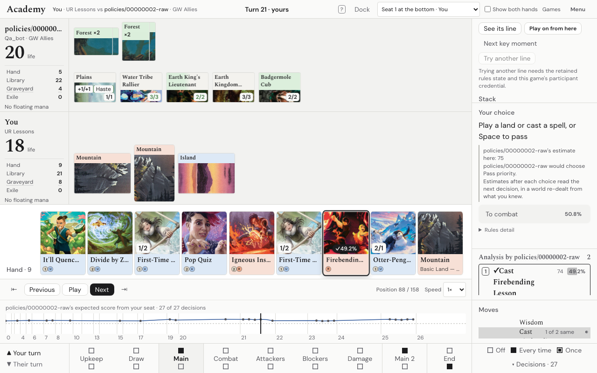

Review at a nine-option decision

Area taken: the whole Study surface this Task built on top of a played game — Review of a played game (views, analysis, marks, value chart, key moments, its line, play on, both hands), Games and My record, and Show analysis while playing — reviewed against base 3be5a0cfb2 at 39259d0e41, with the QA pass (scratch/qa.html) as the walk. Watch's branch boundary (MTG-423) is included only where it shares Review's board.
You lose a game to the trained bot, press Review this game. Analysis starts by itself; the moves fill with "same / differs" marks; the Menu says "chose as the bot would: 2 of 27". At turn 21 you wonder what would have happened had you attacked. The rail offers See its line Play on from here Next key moment Try another line and a sentence: "Trying another line needs the retained rules state and this game's participant credential." Below that: an empty Stack heading, Your choice, an Analysis list showing one row, a Moves list showing two rows, and the play-time stop settings Off / Every time / Once.
Failure: fifteen minutes after the game ended, the one button whose name says what you want (try another line) is disabled for a reason you cannot act on. Recovery: exists — Play on from here does exactly that, forever — but nothing tells you so.

| What a person knows / does | In the code | What is wrong | |
|---|---|---|---|
| A played game, which can be read again | record_of(attempt) → GameRecord, ReplayedViews, step_matches | yes | One record, the engine's own. Nothing new stored. |
| My hand stays mine in Review; every move named | Replayed views for boards; stored track for narration | yes | |
| An Analysis by a policy of my decisions | analyses + analysed_decisions, analyse_game, PolicyAdmissions | yes | Same name, one owner, saved beside the game, never in a frame. |
| Same / differs per move | moveMarks (counts every decision of a move since 39259d0e41) | yes | Fixed in the last pass: marks now add up to the summary. |
| "This game" numbers | GameNumbers, numbers_json, Totals reducer | yes | Code says numbers, UI says This game; documented, harmless. |
| Analysis shown while playing | LiveAnalysis, TraceEvent.analysis_shown | yes | "Shown" means sent to the pilot's socket; recorded in questions.md. |
| Another line from this decision | Three mechanisms: agent_line (read-only play-out), played_from (a new recorded Play game), Study branch (StudyForkProvider, retained roots, 15-minute TTL, Reveal) | no | One idea, three owners and four buttons at one decision. One of them is usually disabled with a reason in engine vocabulary ("retained rules state"). |
| Reviewing (read-only) | The shared Board draws Play's priority-stop track and Off / Every time / Once in Review | no | A play setting with no meaning in a finished game, taking rail and board height that Moves and Analysis need. Predates this Task, but Study is what now needs the room. |
| Read the moves against the analysis | Rail: Stack, Your choice, Analysis list, Moves, each a fixed box | no | At 1280×800 Moves shows two rows and Analysis one; the reading the Task exists for needs two small scrolling panes. |
| Show both hands | Menu checkbox; opponent cards behind the Hand plate's dialog | partly | Readable and keyboard-reachable as MTG-423 asked, but the seat still reads "Hand 6". Left as a question. |
The person has one question at a decision — what if this went differently? — and two ways to ask it: watch the policy continue, or continue it myself. The code answers the second one twice. Play on from here (built this Task) works on every finished game of yours, for ever, and is recorded. Try another line (the pre-existing Study branch) works only while the live session still holds the root, and is ephemeral with a Reveal step. On a finished played game the two overlap completely, and the older one is the one most often disabled.
Before: four affordances, one disabled; a play setting in a read-only view; the two lists the Task is about squeezed. After: two verbs ("see its line", "play on") always present on your analysed decisions; Study's branch shown only where it works; Review's rail gives its height to the analysis and the moves. Nothing is deleted from Study's branch itself, its sealed evidence or its specs: study.spec.ts opens a just-finished game, where it is available, so it still appears.
Counterexample tested: a game watched (bot v bot) has no Play on (not a participant) — Try another line stays its only branch, unchanged. A just-finished played game within 15 minutes shows both; that is honest (an ephemeral branch with Reveal versus a recorded game), named differently, and no longer joined by a disabled button.
Passed over: removing the Study branch from played games (it carries Reveal and Compare plans, which Play on lacks, and has its own specs); merging Play on into Study (Study's roots expire; Play on's record does not).
ef4cbf4447)The three "no" rows above are built: Try another line appears only with can_study; a recording draws no stop toggles, no empty Stack and no disabled answer buttons; Moves take the remaining height and the choices list at most 26%, one line per option. Board now takes an explicit readOnly (set by Replay everywhere but a live Study branch), so See its line keeps Review's layout: one owner for "this board is a recording", where before it was inferred from whether moves jump.
| What a person knows / does | In the code | Note | |
|---|---|---|---|
| Another line from this decision | agent_line (watch it), played_from (play it, recorded), Study branch only while retained | yes | Two verbs always, a third only where it works and means something else (ephemeral, with Reveal). |
| Reviewing is read-only | Board readOnly | yes | One flag instead of an inference from onjump. |
| Read the moves against the analysis | Rail: Moves fill, choices ≤ 26% | yes | Nine moves without a Stack; six with one, four of nine options visible. |
| "I had analysis by X on when I chose this" | TraceEvent.analysis_shown: bool | partly | Which policy was shown is a fact no re-execution recovers, and the event keeps only that one was. If you showed a policy other than the opponent, Review's default analysis (the opponent's) marks the same move with a different policy's reading, and nothing says which you saw. Adding an optional policy id later is additive (absent on older events), so it is left as question 6, not built now. |
Outcome of this pass: nothing to change before gate. The concepts line up; the remaining mismatch is small and additive.
StudyForkProvider over a walk and Reveal evidence from an analysis. Its own Task.